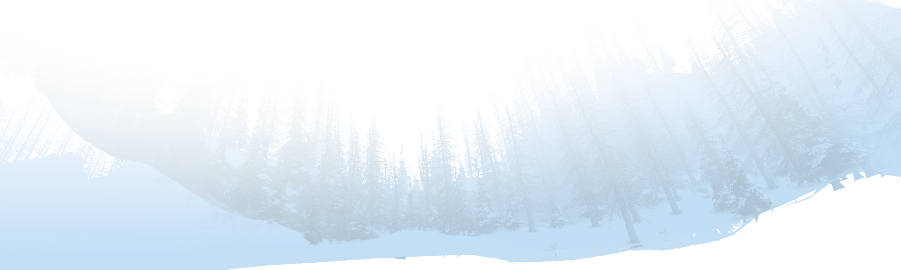
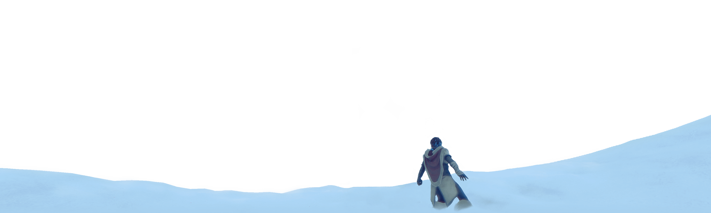
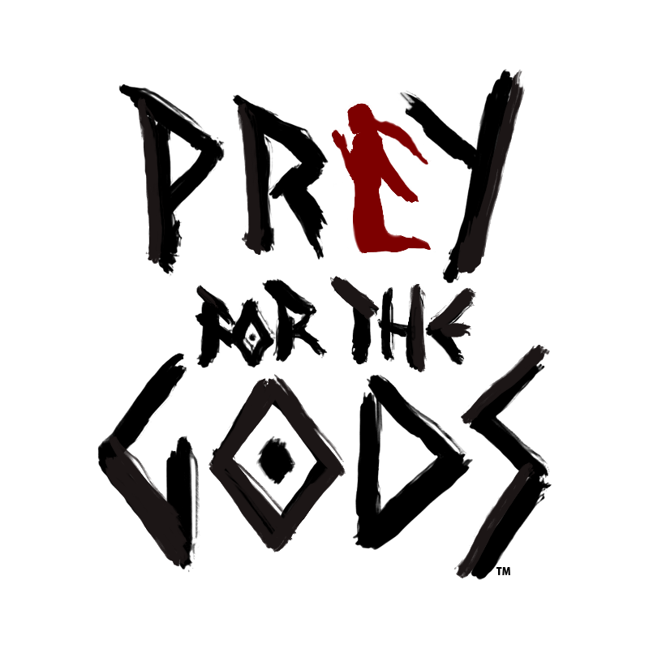
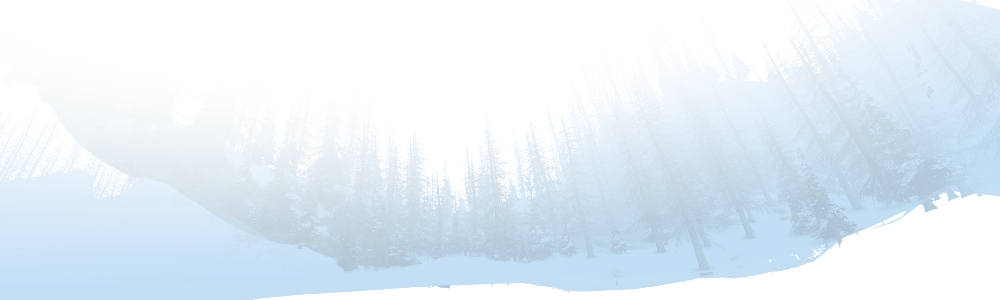
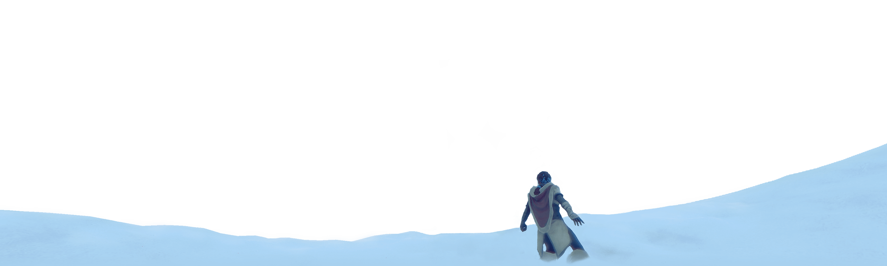
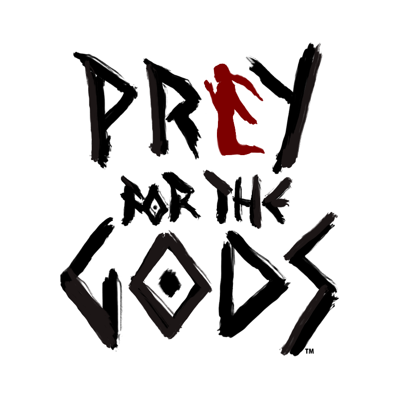
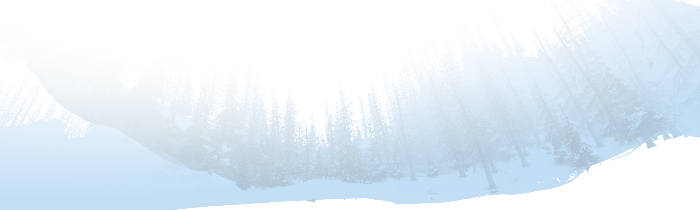
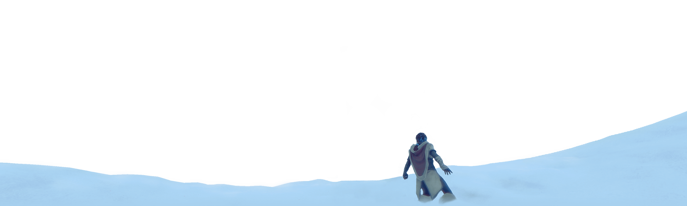
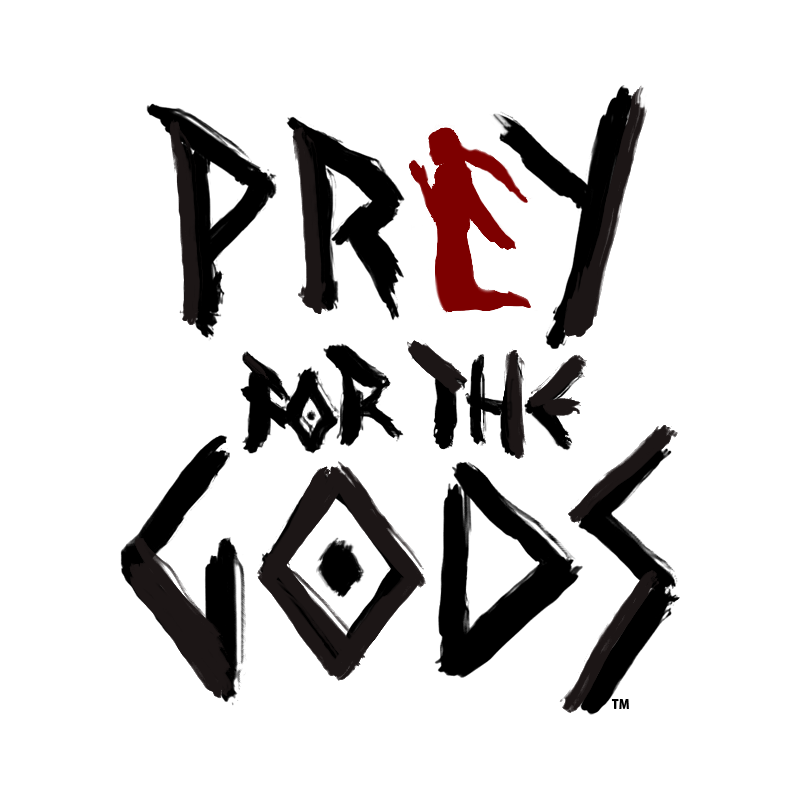
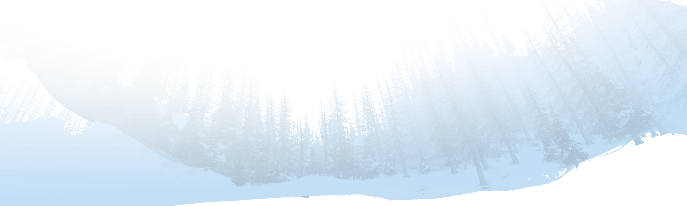
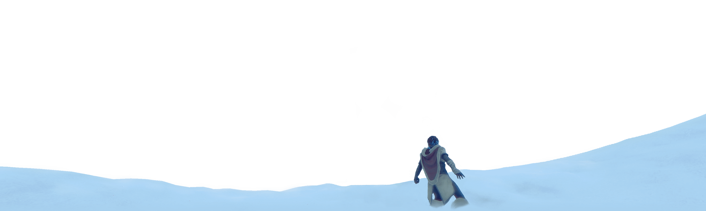
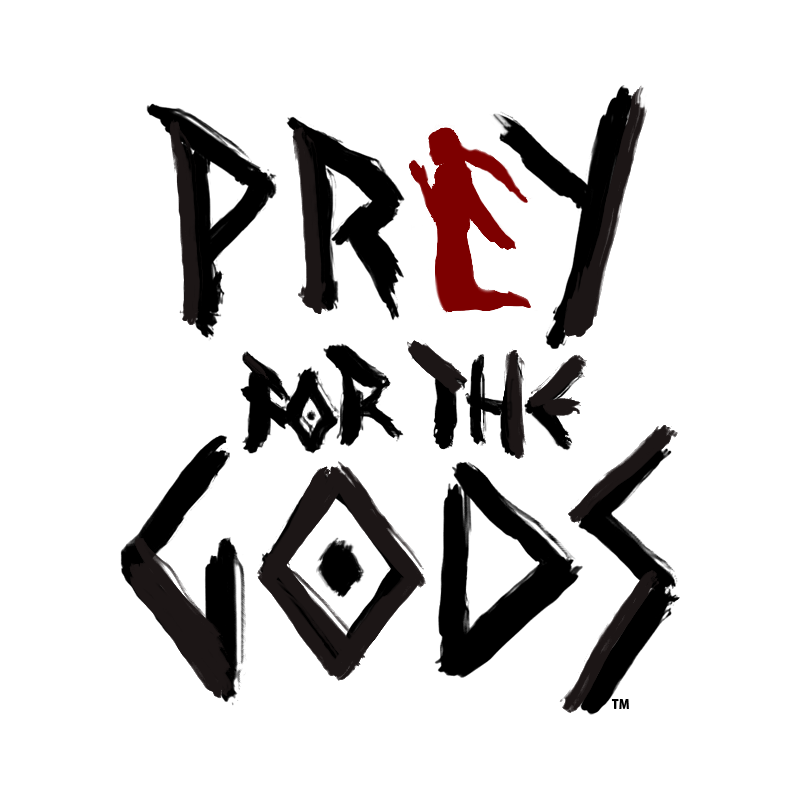
Praey For The Gods is an action survival game created by No Matter Studios which is comprised of three veteran game developers with approximately 30+ years of combined experience.
No Matter Studios is based in Kirkland, WA and was founded on September 1, 2014. The game was initially developed under the name Prey for the Gods,
but was changed as part of a trademark dispute with ZeniMax Media over the Prey name.
The Team is:
In 2004, I got my first job play testing at Nintendo and then my first development job as an artist at Iron Lore working on Titan Quest, Titan Quest: Immortal Throne, Dawn of War: Soulstorm. After that I worked at Harmonix which included Rock Band 2, & RockBand: Beatles. I mainly did 3D character art and some concept/UI work too before getting more interested in proper management and focusing on game development as a whole. All of this while staying up late helping with friends indie projects including Natural Selection 2, and Grim Dawn.
I've been working in the games industry since 2009, started off as an Environment Artist and over time I transitioned into Technical Artist/Tools Engineer, then to Engineer. As a gamer with love for a good story, I'm driven by the desire to develop a game that is Fun first and foremost (yes fun with a capital "F", it's important), with the depth to leave a lasting mark.
I make the magic happen.” That’s all Chien wanted to say, mainly because the guy is too busy atm.
Development so far:
Development of Praey for the Gods began in 2014 in San Francisco. No Matter Studios, the developer of Praey for the Gods, consists of three people,
Brian Parnell, Hung-Chien Liao, and Tim Wiese. They initially worked part-time on the game. On October 19, 2015 No Matter Studio revealed Praey for the Gods
with a short trailer on YouTube.
In February 2016 the studio moved to Seattle, Washington to work on the game full-time.
The game was originally named Prey of the Gods during its Kickstarter campaign, which No Matter Studios filed for trademark protection in May 2016;
however ZeniMax Media, who owns the trademark to the Prey name in the video game sector, issued an objection to the Prey of the Gods mark,
citing that it was too similar to their Prey. No Matter Studios opted to abandon the trademark issue, not wanting to get into a legal battle with ZeniMax,
and announced the change to Praey for the Gods in May 2017, just prior to the release of ZeniMax's Prey